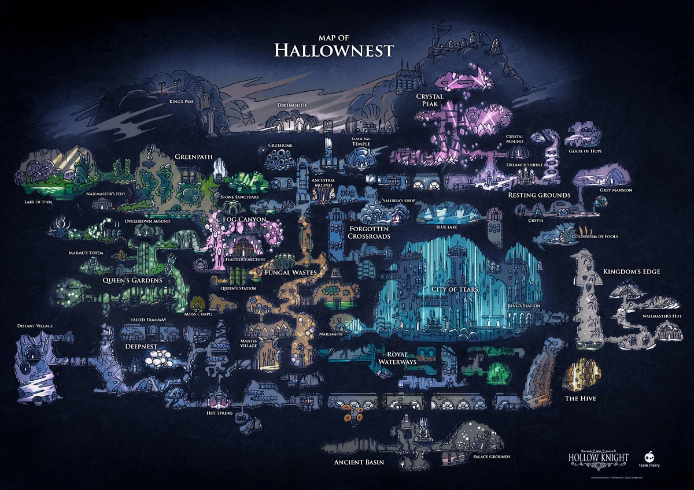
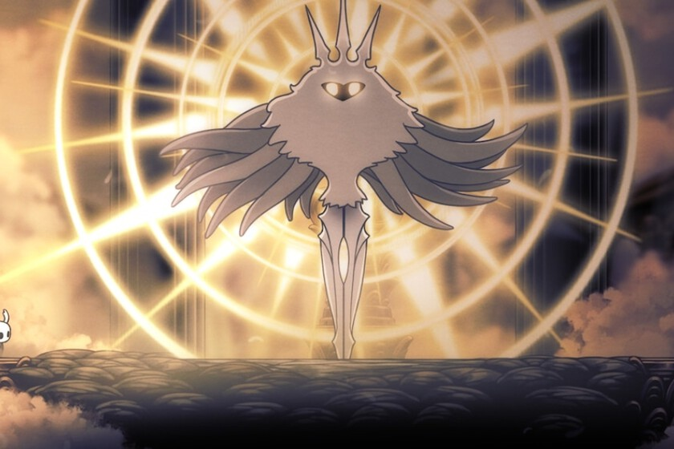
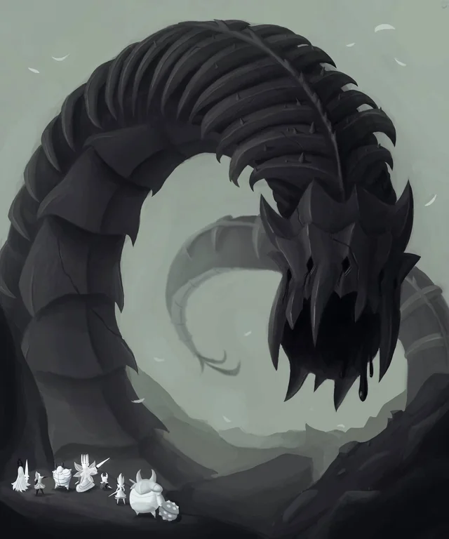
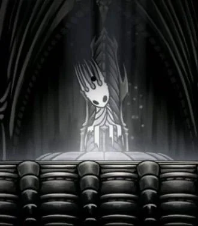
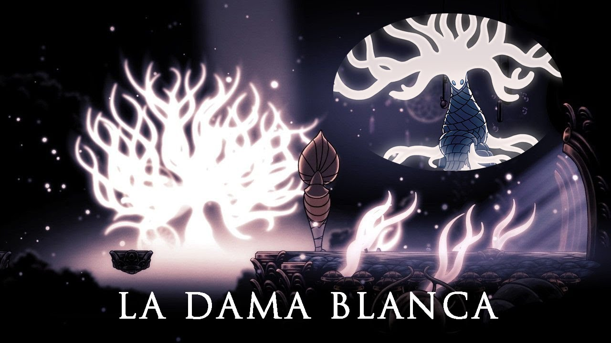
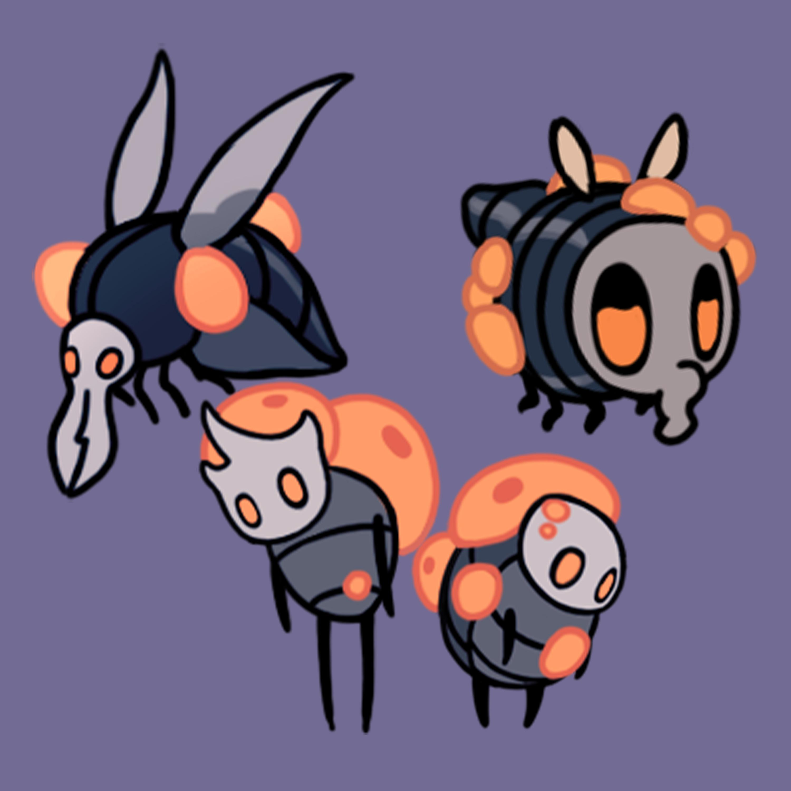

Hallownest
Todo comienza en el reino de Hallownest, un reino extremadamente antiguo en el cual han habitado por mucho tiempo diversas especies, principalmente insectos, que vivían en armonía. Entre ellas se incluyen:
- Las Arañas en el Nido Profundo.
- Las poderosas Mantis de los Páramos Fúngicos.
- Las Abejas de la Colmena.
- Escarabajos, ciempiés, hongos, setas, entre otros.
La vida transcurría en equilibrio, y a pesar de los conflictos internos, los habitantes de Hallownest estaban a salvo. Sin embargo, todo cambió con la llegada de Radiance, una polilla tan poderosa que podría considerarse una diosa o deidad. Pero en realidad, su verdadera naturaleza era mucho más oscura.

Radiance
Radiance se convirtió rápidamente en la diosa de Hallownest. Todos los insectos la adoraban y veneraban, pues tenía el poder de cumplir los deseos de estos. Sin embargo, lo que no sabían era el alto precio que tendrían que pagar por ello.
Aunque Radiance hacía felices a los insectos, al cumplir sus deseos y apartar sus temores, también comenzó a manipular sus mentes. Creó una especie de "mente colmena" dirigida por ella misma y comenzó a controlar a los insectos con mentes débiles. Estos ya no eran dueños de sus vidas; se convirtieron en marionetas de Radiance, despojados de su propia conciencia, solo para seguir sus órdenes.

Los Wyrm
¿Pero por qué Radiance pudo hacer esto sin oposición? Los Wyrm eran insectos colosales y de enorme poder, conocidos por su tamaño y fuerza descomunal (podrían considerarse los "titanes" de Hollow Knight). Estos seres tenían la capacidad de enfrentarse a Radiance, o al menos complicarle las cosas, pero por alguna razón, los Wyrm se extinguieron. Los pocos que quedaban estaban en sus últimos momentos, lo que permitió a Radiance avanzar sin oposición.
Sin embargo, cuando el último Wyrm murió, no lo hizo del todo. Su fuerza era tan grande que, en lugar de morir, se reencarnó en un nuevo ser: El Rey Pálido.

El Rey Pálido
El Rey Pálido se dio cuenta de lo que estaba sucediendo y decidió buscar aliados para enfrentarse a Radiance. Encontró a las orgullosas Mantis, una especie fuerte tanto física como mentalmente, que no se vieron afectadas por el control de Radiance. Juntas, se unieron para detener a la falsa diosa.
Sin embargo, no todos estaban dispuestos a unirse. Las Abejas, aunque tenían la fortaleza para resistir el control, decidieron permanecer al margen, aislándose en su colmena.
Eventualmente, la situación de las Abejas cambió cuando su reina, Vespa, murió, lo que las dejó vulnerables a la infección de Radiance.

La Dama Blanca
Fue con la ayuda de la sabia y poderosa Dama Blanca que el Rey Pálido pudo convencer a otros de unirse a su causa. Juntos, lograron debilitar a Radiance, hasta que finalmente fue derrotada y desapareció, dejando a Hallownest en una época dorada.

La Infección de Radiance
A pesar de la victoria temporal sobre Radiance, la Diosa planeó su regreso. Esta vez, la infección que creó era mucho más agresiva. Quería acabar con Hallownest de una vez por todas, no solo controlando a los insectos, sino destruyéndolos.
La infección que los insectos comenzaban a sufrir tomaba la forma de una substancia naranja que se propagaba rápidamente. Aquellos afectados se convertían en zombis, atacando todo a su paso.

El Hollow Knight
El Rey Pálido, al darse cuenta de la magnitud de la amenaza, decidió crear un ser vacío, un contenedor perfecto para contener la infección de Radiance. Así nació El Hollow Knight, un insecto sin emociones, para que no fuera controlado por la diosa.
Sin embargo, el Hollow Knight no era perfecto. Tenía un sentimiento, el amor y respeto hacia su creador, lo que lo hizo vulnerable. Su intento de contener la infección fue solo temporal, y la amenaza de Radiance continuó creciendo.